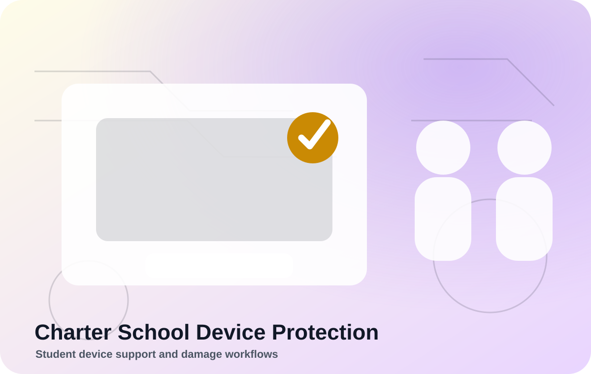
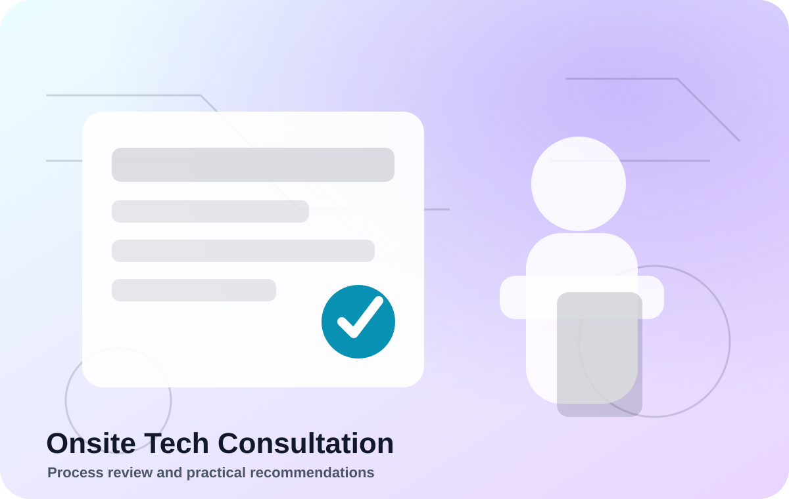
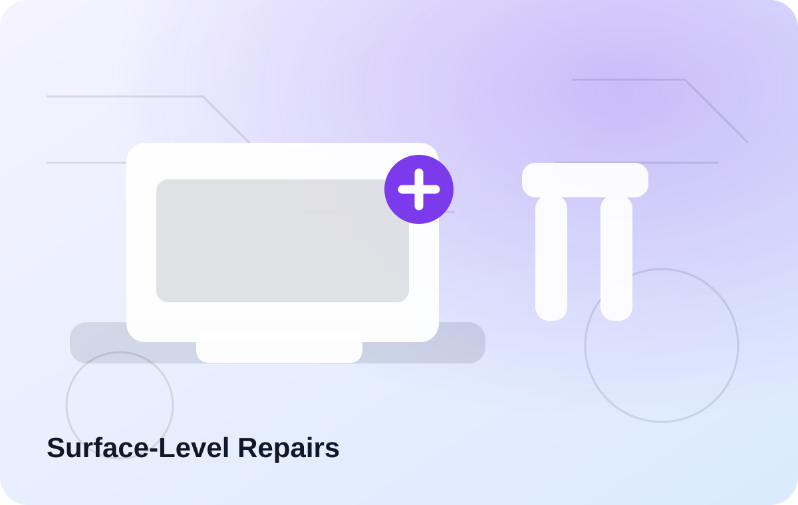
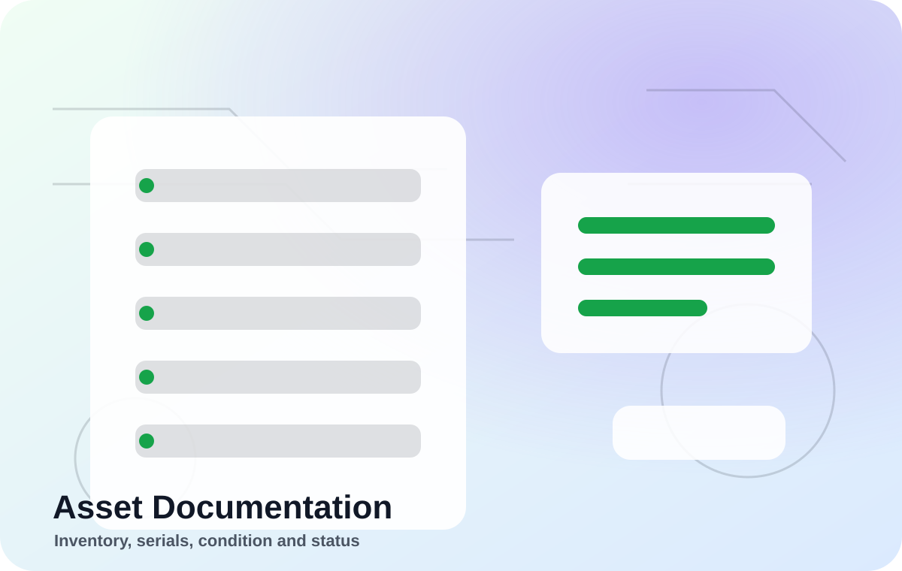

Accidental Damage Protection for Charter Schools
Practical protection support for school-issued devices.
A structured service concept for charter schools managing student devices, accidental damage, repairs, and documentation.

What This Includes
Simple, documented, and practical.
Each service is designed to be easy to understand and easy to act on.
✓
Student device documentation
Included as part of this service workflow.
✓
Damage intake workflow
Included as part of this service workflow.
✓
Repair triage
Included as part of this service workflow.
✓
School-friendly reporting
Included as part of this service workflow.
Related Workflows
Technology support with a complete view.



